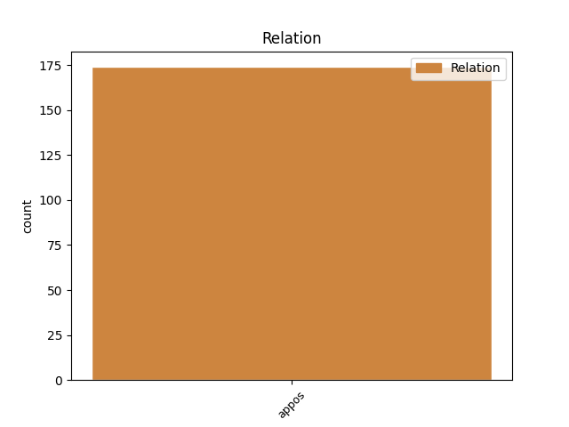
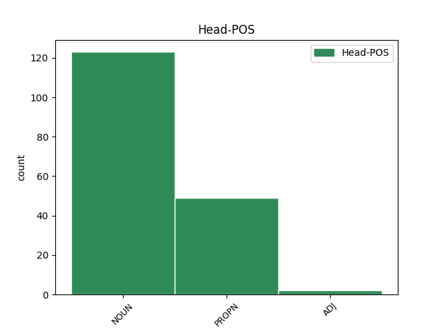
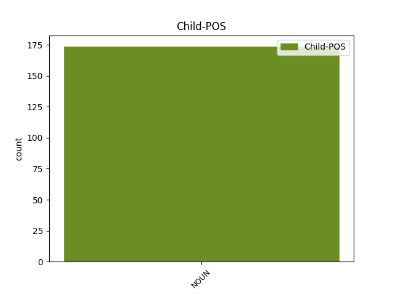

Distribution of features within this leaf



Agreement Rules sorted by frequency.
- When the dependent token is the appositional modifier(appos) of the head token, and the dependent token is NOUN.
1 René _ _ _ _ 0 _ _ _
2 Mayer _ _ _ _ 0 _ _ _
3 , _ _ _ _ 0 _ _ _
4 Président _ _ _ _ 0 _ _ _
5 de _ _ _ _ 0 _ _ _
6 le _ _ _ _ 0 _ _ _
7 Conseil _ _ _ _ 0 _ _ _
8 , _ _ _ _ 0 _ _ _
9 y _ _ _ _ 0 _ _ _
10 mit _ _ _ _ 0 _ _ _
11 fin _ _ _ _ 0 _ _ _
12 en _ _ _ _ 0 _ _ _
13 1953 _ _ _ _ 0 _ _ _
14 en _ _ _ _ 0 _ _ _
15 ramenant _ _ _ _ 0 _ _ _
16 le _ _ _ _ 0 _ _ _
17 taux _ _ _ _ 0 _ _ _
18 de _ _ _ _ 0 _ _ _
19 les _ _ _ _ 0 _ _ _
20 piastres _ _ _ _ 0 _ _ _
21 à _ _ _ _ 0 _ _ _
22 10 _ _ _ _ 0 _ _ _
23 francs franc NOUN _ Gender=Masc|Number=Plur 0 _ _ _
24 , _ _ _ _ 0 _ _ _
25 un _ _ _ _ 0 _ _ _
26 cours cours NOUN _ Gender=Masc|Number=Sing 23 appos _ _
27 plus _ _ _ _ 0 _ _ _
28 réaliste _ _ _ _ 0 _ _ _
29 , _ _ _ _ 0 _ _ _
30 mais _ _ _ _ 0 _ _ _
31 ce _ _ _ _ 0 _ _ _
32 en _ _ _ _ 0 _ _ _
33 violation _ _ _ _ 0 _ _ _
34 de _ _ _ _ 0 _ _ _
35 les _ _ _ _ 0 _ _ _
36 accords _ _ _ _ 0 _ _ _
37 de _ _ _ _ 0 _ _ _
38 le _ _ _ _ 0 _ _ _
39 8 _ _ _ _ 0 _ _ _
40 Mars _ _ _ _ 0 _ _ _
41 1949 _ _ _ _ 0 _ _ _
42 et _ _ _ _ 0 _ _ _
43 de _ _ _ _ 0 _ _ _
44 les _ _ _ _ 0 _ _ _
45 accords _ _ _ _ 0 _ _ _
46 de _ _ _ _ 0 _ _ _
47 Pau _ _ _ _ 0 _ _ _
48 de _ _ _ _ 0 _ _ _
49 1950 _ _ _ _ 0 _ _ _
50 ; _ _ _ _ 0 _ _ _
51 les _ _ _ _ 0 _ _ _
52 États _ _ _ _ 0 _ _ _
53 associés _ _ _ _ 0 _ _ _
54 de _ _ _ _ 0 _ _ _
55 le _ _ _ _ 0 _ _ _
56 Cambodge _ _ _ _ 0 _ _ _
57 , _ _ _ _ 0 _ _ _
58 Laos _ _ _ _ 0 _ _ _
59 et _ _ _ _ 0 _ _ _
60 Viêtnam _ _ _ _ 0 _ _ _
61 ne _ _ _ _ 0 _ _ _
62 furent _ _ _ _ 0 _ _ _
63 pas _ _ _ _ 0 _ _ _
64 consultés _ _ _ _ 0 _ _ _
65 . _ _ _ _ 0 _ _ _
Disagree Examples:
1 L' _ _ _ _ 0 _ _ _
2 inspecteur _ _ _ _ 0 _ _ _
3 d' _ _ _ _ 0 _ _ _
4 académie _ _ _ _ 0 _ _ _
5 a _ _ _ _ 0 _ _ _
6 remercié _ _ _ _ 0 _ _ _
7 la _ _ _ _ 0 _ _ _
8 municipalité _ _ _ _ 0 _ _ _
9 d' _ _ _ _ 0 _ _ _
10 avoir _ _ _ _ 0 _ _ _
11 mené _ _ _ _ 0 _ _ _
12 à _ _ _ _ 0 _ _ _
13 bien _ _ _ _ 0 _ _ _
14 son _ _ _ _ 0 _ _ _
15 projet _ _ _ _ 0 _ _ _
16 en _ _ _ _ 0 _ _ _
17 ayant _ _ _ _ 0 _ _ _
18 associé _ _ _ _ 0 _ _ _
19 les _ _ _ _ 0 _ _ _
20 différentes _ _ _ _ 0 _ _ _
21 parties partie NOUN _ Gender=Fem|Number=Plur 0 _ _ _
22 intéressées _ _ _ _ 0 _ _ _
23 : _ _ _ _ 0 _ _ _
24 enseignants enseignant NOUN _ Gender=Masc|Number=Plur 21 appos _ SpaceAfter=No
25 , _ _ _ _ 0 _ _ _
26 parents _ _ _ _ 0 _ _ _
27 , _ _ _ _ 0 _ _ _
28 pour _ _ _ _ 0 _ _ _
29 la _ _ _ _ 0 _ _ _
30 conception _ _ _ _ 0 _ _ _
31 de _ _ _ _ 0 _ _ _
32 les _ _ _ _ 0 _ _ _
33 locaux _ _ _ _ 0 _ _ _
34 et _ _ _ _ 0 _ _ _
35 la _ _ _ _ 0 _ _ _
36 qualité _ _ _ _ 0 _ _ _
37 de _ _ _ _ 0 _ _ _
38 les _ _ _ _ 0 _ _ _
39 matériaux _ _ _ _ 0 _ _ _
40 utilisés _ _ _ _ 0 _ _ _
41 . _ _ _ _ 0 _ _ _
1 Lorsque _ _ _ _ 0 _ _ _
2 des _ _ _ _ 0 _ _ _
3 utilisateurs utilisateur NOUN _ Gender=Masc|Number=Plur 0 _ _ _
4 , _ _ _ _ 0 _ _ _
5 associations association NOUN _ Gender=Fem|Number=Plur 3 appos _ _
6 ou _ _ _ _ 0 _ _ _
7 particuliers _ _ _ _ 0 _ _ _
8 de _ _ _ _ 0 _ _ _
9 la _ _ _ _ 0 _ _ _
10 commune _ _ _ _ 0 _ _ _
11 , _ _ _ _ 0 _ _ _
12 les _ _ _ _ 0 _ _ _
13 occupent _ _ _ _ 0 _ _ _
14 , _ _ _ _ 0 _ _ _
15 il _ _ _ _ 0 _ _ _
16 leur _ _ _ _ 0 _ _ _
17 est _ _ _ _ 0 _ _ _
18 demandé _ _ _ _ 0 _ _ _
19 une _ _ _ _ 0 _ _ _
20 participation _ _ _ _ 0 _ _ _
21 à _ _ _ _ 0 _ _ _
22 les _ _ _ _ 0 _ _ _
23 frais _ _ _ _ 0 _ _ _
24 de _ _ _ _ 0 _ _ _
25 fonctionnement _ _ _ _ 0 _ _ _
26 . _ _ _ _ 0 _ _ _
1 Les _ _ _ _ 0 _ _ _
2 nombreux _ _ _ _ 0 _ _ _
3 parents _ _ _ _ 0 _ _ _
4 présents _ _ _ _ 0 _ _ _
5 autour _ _ _ _ 0 _ _ _
6 de _ _ _ _ 0 _ _ _
7 le _ _ _ _ 0 _ _ _
8 tatami _ _ _ _ 0 _ _ _
9 n' _ _ _ _ 0 _ _ _
10 ont _ _ _ _ 0 _ _ _
11 pas _ _ _ _ 0 _ _ _
12 manqué _ _ _ _ 0 _ _ _
13 d' _ _ _ _ 0 _ _ _
14 encourager _ _ _ _ 0 _ _ _
15 leurs _ _ _ _ 0 _ _ _
16 enfants _ _ _ _ 0 _ _ _
17 ou _ _ _ _ 0 _ _ _
18 de _ _ _ _ 0 _ _ _
19 parfois _ _ _ _ 0 _ _ _
20 sécher _ _ _ _ 0 _ _ _
21 quelques _ _ _ _ 0 _ _ _
22 larmes larme NOUN _ Gender=Fem|Number=Plur 0 _ _ _
23 , _ _ _ _ 0 _ _ _
24 symbole symbole NOUN _ Gender=Masc|Number=Sing 22 appos _ _
25 de _ _ _ _ 0 _ _ _
26 défaite _ _ _ _ 0 _ _ _
27 ! _ _ _ _ 0 _ _ _
1 Mme monsieur NOUN _ Gender=Fem|Number=Sing 0 _ _ _
2 Michèle _ _ _ _ 0 _ _ _
3 Demange _ _ _ _ 0 _ _ _
4 , _ _ _ _ 0 _ _ _
5 adjoint adjoint NOUN _ Gender=Masc|Number=Sing 1 appos _ _
6 à _ _ _ _ 0 _ _ _
7 le _ _ _ _ 0 _ _ _
8 maire _ _ _ _ 0 _ _ _
9 , _ _ _ _ 0 _ _ _
10 conduira _ _ _ _ 0 _ _ _
11 les _ _ _ _ 0 _ _ _
12 opérations _ _ _ _ 0 _ _ _
13 . _ _ _ _ 0 _ _ _
1 La _ _ _ _ 0 _ _ _
2 bivalirudine bivalirudine NOUN _ Gender=Fem|Number=Sing 0 _ _ _
3 , _ _ _ _ 0 _ _ _
4 principe principe NOUN _ Gender=Masc|Number=Sing 2 appos _ _
5 actif _ _ _ _ 0 _ _ _
6 de _ _ _ _ 0 _ _ _
7 Angiox _ _ _ _ 0 _ _ _
8 , _ _ _ _ 0 _ _ _
9 est _ _ _ _ 0 _ _ _
10 une _ _ _ _ 0 _ _ _
11 substance _ _ _ _ 0 _ _ _
12 synthétique _ _ _ _ 0 _ _ _
13 dérivée _ _ _ _ 0 _ _ _
14 de _ _ _ _ 0 _ _ _
15 l' _ _ _ _ 0 _ _ _
16 hirudine _ _ _ _ 0 _ _ _
17 , _ _ _ _ 0 _ _ _
18 la _ _ _ _ 0 _ _ _
19 substance _ _ _ _ 0 _ _ _
20 anticoagulante _ _ _ _ 0 _ _ _
21 produite _ _ _ _ 0 _ _ _
22 par _ _ _ _ 0 _ _ _
23 les _ _ _ _ 0 _ _ _
24 sangsues _ _ _ _ 0 _ _ _
25 . _ _ _ _ 0 _ _ _